การเขียนโปรแกรม ESP32-C3 ด้วย Arduino ทำงานในโหมด Sleep / Wakeup และวิเคราะห์การใช้พลังงาน#
Keywords: ESP32-C3, Low-Power Modes, Deep-Sleep, Light-Sleep, Wakeup, Power Consumption, Current-Shunt Monitor, Current Consumption
▷ ESP32-C3 และโหมดการประหยัดพลังงาน#
จากบทความ "การทำงานของชิป ESP32-C3 ในโหมดประหยัดพลังงาน" ที่ได้นำเสนอการทำงานของชิป Espressif SoC ในโหมดประหยัดพลังงาน ได้แก่ Modem-Sleep, Light-Sleep และ Deep-Sleep
ในบทความนี้จะนำเสนอตัวอย่างการเขียนโค้ด เพื่อทดสอบการทำงานของชิป ESP32-C3 ในโหมดประหยัดพลังงาน และวัดปริมาณกระแสไฟฟ้าที่ใช้กับบอร์ดไมโครคอนโทรลเลอร์ในขณะที่ทำงาน โดยใช้โมดูล Current-Sense Amplifier (CSA) / Current-Shunt Monitor IC เช่น MAX4080S
โมดูล MAX4080S ให้เอาต์พุตเป็นแรงดันไฟฟ้าหรือสัญญาณแอนะล็อก แต่เนื่องจากปริมาณกระแสไฟฟ้าของไมโครคอนโทรลเลอร์ มีการเปลี่ยนแปลงเชิงเวลาอย่างรวดเร็ว จึงนำสัญญาณแรงดันเอาต์พุตนำไปใช้กับออสซิลโลสโคป เพื่อวัดสัญญาณและแสดงรูปคลื่นสัญญาณ
การเขียนโค้ด จะใช้ Arduino-ESP32 Core (v3.3.x) เป็นหลัก เพื่อสะดวกในการทดลอง และเขียนโค้ดได้สั้นกว่าการเขียนโค้ด เพื่อนำไปใช้กับ Espressif ESP-IDF / Espressif IoT Development Framework
▷ ตัวอย่างโค้ดที่ 1: Deep-Sleep + RTC Timer Wakeup#
ลองมาดูตัวอย่างแรก การทำให้ ESP32-C3 เข้าสู่ Deep-Sleep และเว้นระยะเวลาคงที่ จากนั้นจึงถูกปลุกให้ตื่นขึ้นมาเริ่มต้นทำงานใหม่
// Arduino Sketch: esp32c3_deepsleep_timer_wakeup.ino
#define PULSE_GPIO 10 // GPIO-10
void setup() {
pinMode( PULSE_GPIO, OUTPUT );
// Toggle the GPIO pin to generate a pulse.
digitalWrite(PULSE_GPIO, 1);
delay(10);
digitalWrite(PULSE_GPIO, 0);
delay(10);
digitalWrite(PULSE_GPIO, 1);
// Configure the RTC timer to trigger a wakeup event
esp_sleep_enable_timer_wakeup(100000); // 100ms = 100000µs
// Enter deep sleep
esp_deep_sleep_start();
}
void loop() {
// empty
}
ในเชิงเปรียบเทียบ ก็มีตัวอย่างโค้ดสำหรับนำไปใช้กับ Espressif ESP-IDF (ทดลองใช้กับเวอร์ชัน v5.4.x)
// File: main/esp32c3-deepsleep-demo.c
#include "freertos/FreeRTOS.h"
#include "freertos/task.h"
#include "driver/gpio.h"
#include "esp_sleep.h"
#include "esp_log.h"
#include "esp_system.h"
#define PULSE_GPIO 10 // GPIO-10
void app_main(void)
{
// Log wakeup reason
esp_sleep_wakeup_cause_t reason = esp_sleep_get_wakeup_cause();
if (reason != ESP_SLEEP_WAKEUP_UNDEFINED) {
ESP_LOGI("WAKE", "Wakeup from deep sleep (reason: %d)", reason);
} else {
ESP_LOGI("WAKE", "Cold boot (power-on or reset)");
}
// Configure GPIO for pulse output
gpio_config_t io_conf = {
.pin_bit_mask = (1ULL << PULSE_GPIO),
.mode = GPIO_MODE_OUTPUT,
.pull_up_en = GPIO_PULLUP_DISABLE,
.pull_down_en = GPIO_PULLDOWN_DISABLE,
.intr_type = GPIO_INTR_DISABLE
};
gpio_config( &io_conf );
// Generate pulse: High -> Low -> High with 10 ms delay
gpio_set_level( PULSE_GPIO, 1 );
vTaskDelay( pdMS_TO_TICKS(10) );
gpio_set_level( PULSE_GPIO, 0 );
vTaskDelay( pdMS_TO_TICKS(10) );
gpio_set_level( PULSE_GPIO, 1 );
// Set RTC wakeup timer: 100ms = 100000µs
esp_sleep_enable_timer_wakeup( 100000 );
ESP_LOGI("SLEEP", "Entering deep sleep for 100 ms");
esp_deep_sleep_start();
// Execution will not reach here.
}
โค้ดทั้งสองตัวอย่าง (ทั้งในรูปแบบ Arduino Sketch และ ESP-IDF) มีเป้าหมายเพื่อสาธิตการทำงานของชิป ESP32-C3 ในโหมด Deep-Sleep โดยใช้ RTC Timer เป็นตัวปลุก (Wake-up Source) ให้กับซีพียู (RISC-V CPU Core)
ขั้นตอนหลักในการทำงานของโค้ด มีดังนี้
- ตั้งค่า GPIO เพื่อส่งพัลส์ (Pulse) สั้น ๆ
- ใช้ GPIO-10 (
PULSE_GPIO) เป็นเอาต์พุต - สร้างพัลส์ลำดับ: High → Low → High โดยเว้นช่วงเวลา 10ms ระหว่างแต่ละระดับ
- สัญญาณนี้สามารถใช้เพื่อตรวจสอบการตื่นของชิปด้วยออสซิลโลสโคป
- ใช้ GPIO-10 (
- ตั้งค่า Wakeup Timer
- ใช้ฟังก์ชัน
esp_sleep_enable_timer_wakeup(...)เพื่อกำหนดให้ปลุกชิปหลังจาก 100,000 ไมโครวินาที
- ใช้ฟังก์ชัน
- เข้าสู่โหมด Deep-Sleep
- เมื่อเรียก
esp_deep_sleep_start()แล้ว CPU และส่วนอื่น ๆ จะปิดตัวลงเพื่อประหยัดพลังงาน - เมื่อครบเวลา 100ms ชิปจะรีบูต และเริ่มการทำงานใหม่ที่
setup()(สำหรับ Arduino Sketch) หรือapp_main()(สำหรับ ESP-IDF)
- เมื่อเรียก
โหมด Deep-Sleep ถือว่าเป็นโหมดที่ประหยัดพลังงานได้มากที่สุดใน ESP32-C3 โดยจะตัดการทำงานของ RISC-V CPU หน่วยความจำภายใน และ Wi-Fi/BT ทั้งหมด เหลือเพียงวงจร RTC (Real-Time Clock) และ PMU (Power Management Unit) ที่ยังทำงานอยู่ ข้อดีคือใช้พลังงานต่ำมาก แต่ข้อเสียคือ ต้องใช้เวลามากขึ้นในการเริ่มต้นใหม่หลังจากตื่น เมื่อเทียบกับโหมด Light-Sleep ซึ่งไม่ต้องรีเซตระบบทั้งหมดและสามารถกลับมาทำงานได้เร็วกว่า
▷ การทดลองวัดกระแสของบอร์ด ESP32-C3#
การทดลองวัดกระแสที่ใช้กับบอร์ดไมโครคอนโทรลเลอร์ ESP32-C3 มีแนวทางดังนี้
- เลือกใช้บอร์ด ESP32-C3 ที่สามารถป้อนแรงดันไฟเลี้ยง VDC=+5V เข้าที่ขาของบอร์ดได้ และไม่ใช้แรงดันไฟเลี้ยง VBUS จากพอร์ต USB ในขณะที่ทดลองวัดกระแส
- การต่อแรงดันไฟเลี้ยงภายนอก (External Supply Voltage) แนะนำให้ต่อผ่าน Schottky Diode (มีแรงดัน Forward Voltage ประมาณ 0.2V)
- การเชื่อมต่อบอร์ดไมโครคอนโทรลเลอร์กับคอมพิวเตอร์ทางพอร์ต USB จะใช้เฉพาะการจ่ายไฟเลี้ยง และอัปโหลดโปรแกรมไปยังบอร์ด ESP32-C3 เท่านั้น ดังนั้นเมื่อทำขั้นตอน Upload สำเร็จ ให้ถอดสาย USB ออก แล้วจึงจ่ายแรงดันไฟเลี้ยงจากภายนอก
- แรงดันไฟเลี้ยง VDC=+5V จะต้องต่อผ่านโมดูล Current-Shunt Monitor เช่น ใช้โมดูล MAX4080S โดยจะต้องต่อแบบ High-Side และใช้ออสซิลโลสโคปวัดแรงดันเอาต์พุต (แรงดันเอาต์พุตจะแปรผันตรงกับกระแสที่ไหล ซึ่งเป็นกระแสที่ใช้ในการทำงานของบอร์ด ESP32-C3)
ในการทดลองวัดกระแส ได้เลือกใช้บอร์ด Weact Studio ESP32-C3FH4 Mini Core:
- บอร์ดนี้ใช้แรงดันไฟเลี้ยงจากพอร์ต USB เรียกว่า
VBUSและต่อผ่าน Schottky Diode (1N5819) ไปยัง VDD5V เพื่อใช้เป็นอินพุตของไอซีแปลงแรงดันเป็น 3.3V (MicroOne ME6211A33M3G, แรงดันอินพุตไม่เกิน 6V, กระแสสูงสุด 500mA) - บอร์ดนี้มีขา VBAT ใช้ต่อกับแรงดันไฟเลี้ยงภายนอกได้ โดยได้ใส่ Schottky Diode (1N5819) ไว้ให้แล้ว เพื่อต่อไปยัง VDD5V ของบอร์ด
- บอร์ดนี้ไม่มีวงจร USB-Serial Bridge Chip และจะใช้วงจร USB ภายในของชิป ESP32-C3 ในโหมด USB-CDC (Serial) เพื่อการอัปโหลดโปรแกรม
- การอัปโหลดในแต่ละครั้ง ให้กดปุ่ม BOOT ค้างไว้ และกดปุ่ม RESET แล้วปล่อย เพื่อเข้าสู่โหมด Bootloader
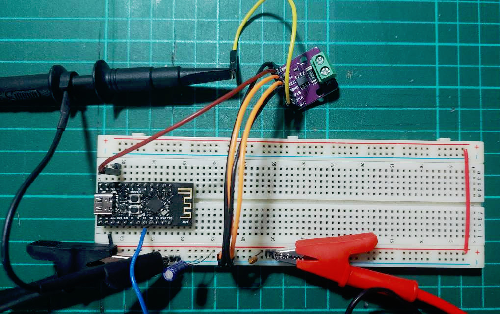
รูป: ตัวอย่างอุปกรณ์ที่ได้นำมาต่อวงจรทดลอง (บอร์ด ESP32-C3 และโมดูล GY-408 (MAX4080S))
ถัดไปเป็นตัวอย่างรูปคลื่นสัญญาณจากขา OUT ของโมดูล MAX4080S และใช้ออสซิลโลสโคป วัดสัญญาณ (RIGOL DS2072A) จำนวน 2 ช่อง
- CH1 สำหรับแรงดันเอาต์พุตจากขา OUT ของโมดูล MAX4080S (GY-408)
- CH2 สำหรับสัญญาณพัลส์จากขา GPIO ของ ESP32-C3
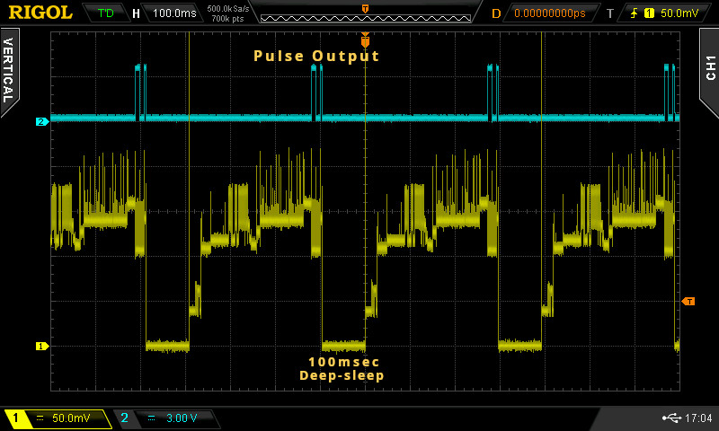
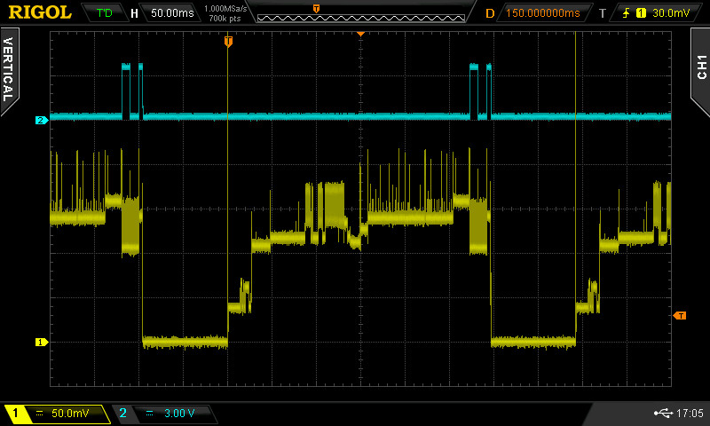
รูป: สัญญาณจากออสซิลโลสโคป เมื่อ ESP32-C3 ทำงานสลับ Active / Deep-Sleep / Wakeup
จากรูปกราฟ จะเห็นได้ว่า สัญญาณ CH1 เป็นแรงดันเอาต์พุตจากขา OUT ของ MAX4080S และไม่คงที่ ถ้ามีระดับยิ่งสูงขึ้น ก็แสดงว่า มีการใช้กระแสไฟฟ้ามากขึ้น (ให้ถือว่า แรงดันไฟเลี้ยงสำหรับบอร์ดนั้นคงที่)
ในช่วง Deep-Sleep ซึ่งมีระยะเวลาประมาณ 100 msec จะใช้ปริมาณกระแสเข้าใกล้ศูนย์ (อาจใช้วิธีวัดด้วยมัลติมิเตอร์ หรือเครื่องมือวัดที่มีความแม่นยำในการวัดกระแสระดับ µA) และหลังจากถูกปลุกให้ตื่นด้วย RTC Timer ในแต่ละครั้ง ปริมาณกระแสจะเพิ่มขึ้น ในช่วงที่ CPU อยู่ในโหมด Active และช่วงท้ายจะเห็นว่าเกิดสัญญาณ Pulse ที่สัญญาณ CH2 ก่อนที่จะเข้าสู่ Deep-Sleep อีกครั้ง
ช่วงที่ CPU Active ตามการทำงานของโค้ดตัวอย่าง จะประมาณ 300 msec และจะเห็นได้ว่า หลังจากถูกปลุก จะต้องใช้เวลาราว ๆ 270~275 msec ก่อนจะเริ่มสร้างสัญญาณพัลส์ที่ขาเอาต์พุต (GPIO Toggle)
สัญญาณ CH1 มีค่า Volt/DIV เท่ากับ 50 mV ดังนั้นจากรูปคลื่นสัญญาณ ในช่วงเวลาส่วนใหญ่ของ CPU Active แรงดันเอาต์พุตจะอยู่ในช่วง 100mV ~ 150mV แต่ก็มีบางช่วงที่เกิน 200 mV
หากจะคำนวณให้เป็นปริมาณกระแส ก็สามารถทำได้ โดยใช้สูตร:
โดยที่
- คือ อัตราการขยายเมื่อแปลงกระแสให้เป็นแรงดันไฟฟ้า และสำหรับโมดูล GY-408 (MAX4080S) ที่ใช้ทดลอง จะเท่ากับ 6 mA/mV
- เป็นค่าแรงดันออฟเซต ซึ่งอาจทำให้เกิดความคลาดเคลื่อนในการวัด
ดังนั้นถ้าวัดแรงดันเอาต์พุตด้วยสโคปได้ในช่วง เช่น 50mV ~ 150mV ก็สามารถคำนวณและประมาณค่าปริมาณกระแสที่ใช้ได้ในช่วง 8.3mA ~ 25mA (+/-2mA)
จากข้อมูลในเอกสารของผู้ผลิต ชิป ESP32-C3 (CPU Clock 160MHz) จะใช้กระแส (โดยเฉลี่ย) ประมาณ
- CPU Running: 23mA ~ 28mA
- CPU Idle: 16mA ~ 21mA
- Modem Sleep: 15mA ~ 20mA
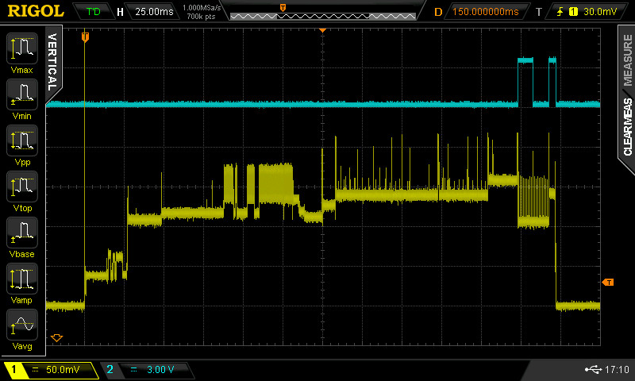
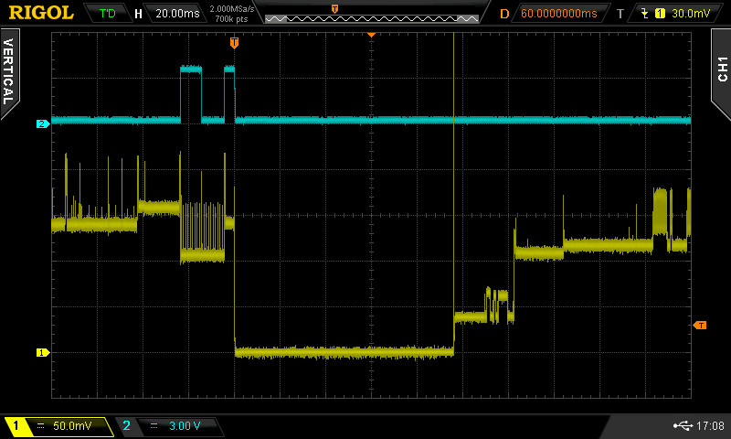
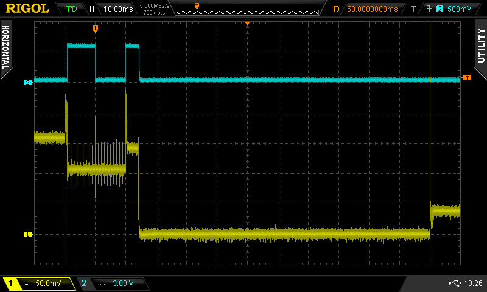
รูป: สัญญาณจากออสซิลโลสโคป CH1: MAX4080S OUT Pin และ CH2: ESP32-C3 Pulse GPIO Pin
จากรูปคลื่นสัญญาณที่วัดได้ จะเห็นว่า ช่วงเวลาที่ทำขั้นตอนการสร้างพัลส์ High → Low → High โดยเว้นช่วงเวลา 10ms ระหว่างแต่ละระดับ แรงดันช่อง CH1 วัดได้ประมาณ 100mV ~ 150mV หรือคำนวณเป็นกระแสที่ใช้ได้ประมาณ 16.7mA ~ 25.0mA
ในโค้ดตัวอย่าง การคำสั่ง (เกือบ) สุดท้ายก่อนสั่งให้ระบบเข้าสู่โหมด Deep-Sleep คือ การเปลี่ยนให้ขา GPIO จาก LOW → HIGH แต่เมื่อเข้าสู่ Deep-Sleep แล้วสถานะลอจิกของขาเอาต์พุตดังกล่าว จะถูกเปลี่ยนเป็น LOW โดยอัตโนมัติ และถ้าดูจากคลื่นสัญญาณ ก็จะเห็นว่า ขั้นตอนเข้าสู่ Deep-Sleep จะใช้เวลาประมาณ 4 ~ 5msec
▷ ตัวอย่างโค้ดที่ 2: Light-Sleep + RTC Timer Wakeup#
ถัดไปเป็นตัวอย่างโค้ด Arduino เพื่อสาธิตการทำงานในโหมด Light-Sleep และปลุกโดย RTC Timer
#define PULSE_GPIO 10
#define INTERVAL_US 100000UL
void setup() {
pinMode( PULSE_GPIO, OUTPUT );
}
void loop() {
// Generate pulse
digitalWrite(PULSE_GPIO, 1);
delay(10);
digitalWrite(PULSE_GPIO, 0);
delay(10);
digitalWrite(PULSE_GPIO, 1);
// Configure the RTC timer to trigger a wakeup event
esp_sleep_enable_timer_wakeup( INTERVAL_US );
// Enter light sleep
esp_light_sleep_start();
}
โค้ดนี้ทำให้ ESP32-C3 ส่งพัลส์ออกทางขา GPIO-10 และเข้าสู่ Light Sleep เพื่อประหยัดพลังงาน พร้อมควบคุมเวลาให้สม่ำเสมอในทุกๆ 100 msec โดยมีหลักการดังนี้:
- กำหนด
PULSE_GPIO(GPIO 10) เป็นขาส่งสัญญาณพัลส์ (HIGH→LOW→HIGH) เพื่อเก็บเวลาปลุกถัดไปในหน่วยไมโครวินาที และข้อมูลคงอยู่หลังจากเข้าสู่โหมดLight Sleep แต่ตื่นขึ้นมาอีกครั้ง - ตั้งเวลาปลุกด้วย
esp_sleep_enable_timer_wakeup(...) - เข้าสู่ Light Sleep ด้วย
esp_light_sleep_start()แล้วทำซ้ำ
จากรูปคลื่นสัญญาณ จะเห็นได้ว่า ESP32-C3 เมื่อเข้าสู่โหมด Light-Sleep จะใช้กระแสน้อยมาก และเมื่อถูกปลุกขึ้นมา หลังจากเว้นระยะไว้ประมาณ 100msec ก็สามารถตื่นและทำต่อได้อย่างรวดเร็ว
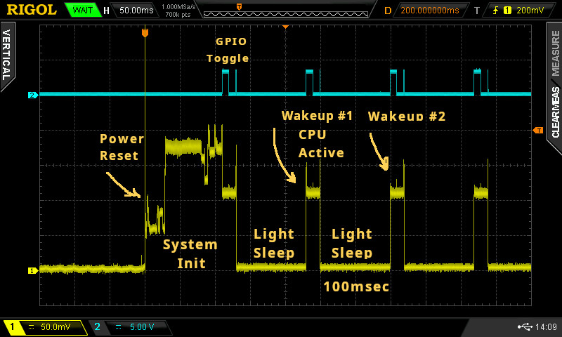
รูป: ตัวอย่างคลื่นสัญญาณได้จากการวัดด้วยสโคป (การทำงานในโหมด Light-Sleep)
ช่วงที่ตื่นขึ้นมาทำงานในแต่ละรอบ วัดแรงดันได้ประมาณ 110mV หรือ คิดเป็นกระแสประมาณ 18.3mA
▷ ตัวอย่างโค้ดที่ 3: Light-Sleep + RTC Timer Wakeup (Periodic Wakeup)#
โค้ดตัวอย่างนี้คล้ายกับตัวอย่างที่แล้ว แต่มีการปรับเปลี่ยนเพื่อพยายามให้มีการปลุก CPU จากสถานะ Light-Sleep ด้วยอัตราคงที่ (Periodic Wakeup)
#define PULSE_GPIO 10
#define INTERVAL_USEC 100000UL // 100 ms
int64_t next_wakeup_time_usec = 0;
void setup() {
pinMode(PULSE_GPIO, OUTPUT);
}
void loop() {
// Generate a pulse
digitalWrite(PULSE_GPIO, 1);
delay(10);
digitalWrite(PULSE_GPIO, 0);
delay(10);
digitalWrite(PULSE_GPIO, 1);
int64_t now = esp_timer_get_time();
int64_t sleep_interval_usec;
// On first run
if (next_wakeup_time_usec == 0) {
next_wakeup_time_usec = now + INTERVAL_USEC;
sleep_interval_usec = INTERVAL_USEC;
} else {
// Advance to the next target time
next_wakeup_time_usec += INTERVAL_USEC;
// If we're late, skip ahead to a future aligned time
if (next_wakeup_time_usec <= now) {
next_wakeup_time_usec = now + INTERVAL_USEC;
}
sleep_interval_usec = next_wakeup_time_usec - now;
}
// Configure the RTC timer to trigger a wakeup event
esp_sleep_enable_timer_wakeup(sleep_interval_usec);
// Enter light sleep
esp_light_sleep_start();
}
โค้ดนี้ทำให้ ESP32-C3 ส่งพัลส์ออกทางขา GPIO-10 และเข้าสู่ Light Sleep เพื่อประหยัดพลังงาน พร้อมควบคุมเวลาให้สม่ำเสมอในทุกๆ 100 msec โดยมีหลักการดังนี้:
- ใช้ตัวแปรชื่อ
next_wakeup_time_usecเพื่อเก็บเวลาปลุกถัดไปในหน่วยไมโครวินาที และข้อมูลคงอยู่หลังจากเข้าสู่โหมดLight Sleep แต่ตื่นขึ้นมาอีกครั้ง - คำนวณระยะเวลาที่เหลือก่อนถึงเวลาปลุกครั้งถัดไป:
- หากยังไม่เคยกำหนด (ทำงานครั้งแรก) ให้ปลุกในอีก 100ms
- หากเคยกำหนดแล้ว ให้คำนวณระยะเวลาถึงเวลาเป้าหมายถัดไป
- หากเวลาปัจจุบันล่าช้ากว่าเป้าหมาย ให้ขยับเวลาเป้าหมายใหม่
- ตั้งเวลาปลุกด้วย
esp_sleep_enable_timer_wakeup(...) - เข้าสู่ Light Sleep ด้วย
esp_light_sleep_start()แล้วทำซ้ำ
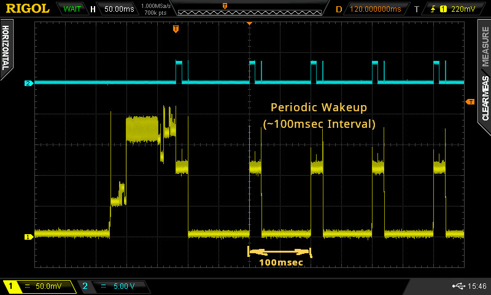
รูป: ตัวอย่างคลื่นสัญญาณได้จากการวัดด้วยสโคป (การทำงานในโหมด Light-Sleep) และมีการปรับชดเชย เพื่อให้การปลุกให้ตื่นเกิดขึ้นด้วยอัตราคงที่
▷ ตัวอย่างโค้ดที่ 4: Deep-Sleep + GPIO & RTC Timer Wakeup#
ตัวอย่างถัดไปสาธิตการเลือกใช้ Wakeup Sources จาก GPIO และ RTC Timer สำหรับการปลุก CPU ให้ตื่นจากสถานะ Deep-Sleep และสำหรับ ESP32-C3 ขาที่ใช้ในการปลุกได้ จะต้องเป็นขา RTC GPIO ซึ่งตรงกับขาหมายเลข GPIO-0 .. GPIO-5
// Define the GPIO used to output a pulse signal
#define PULSE_GPIO 10 // GPIO-10
// Define the GPIO used to wake up the ESP32-C3 from deep sleep
// Note: Only GPIO0–5 are RTC capable on ESP32-C3 and usable for wakeup
#define WAKEUP_GPIO 3
// Define the deep sleep interval in microseconds (100 msec)
#define SLEEP_INTERVAL_USEC (100*1000UL)
void setup() {
// Set the wakeup GPIO as input with internal pull-up resistor
pinMode(WAKEUP_GPIO, INPUT_PULLUP);
// Set the pulse output GPIO as output
pinMode(PULSE_GPIO, OUTPUT);
// Flag to determine whether to enter deep sleep
bool disable_deep_sleep = false;
// Check the reason for wakeup
esp_sleep_wakeup_cause_t wakeup_reason = esp_sleep_get_wakeup_cause();
if (wakeup_reason == ESP_SLEEP_WAKEUP_GPIO) {
// If wakeup was due to GPIO, skip entering deep sleep again
disable_deep_sleep = true;
}
// Generate pulse sequence on PULSE_GPIO
digitalWrite(PULSE_GPIO, 1);
delay(10);
digitalWrite(PULSE_GPIO, 0);
delay(10);
digitalWrite(PULSE_GPIO, 1);
if (!disable_deep_sleep) {
// Enable timer-based wakeup after SLEEP_INTERVAL_USEC
esp_sleep_enable_timer_wakeup(SLEEP_INTERVAL_USEC);
// Create bitmask for the WAKEUP_GPIO pin
uint64_t gpio_mask = 1ULL << WAKEUP_GPIO;
// Enable wake-up on WAKEUP_GPIO when it goes LOW
esp_deep_sleep_enable_gpio_wakeup(gpio_mask, ESP_GPIO_WAKEUP_GPIO_LOW);
// Enter deep sleep mode - execution stops here until next wakeup
esp_deep_sleep_start();
}
}
void loop() {
// Toggle the pulse output pin every 50 ms
// (only runs after wakeup from GPIO)
digitalWrite(PULSE_GPIO, !digitalRead(PULSE_GPIO));
delay(50);
}
โค้ดนี้ใช้กับบอร์ด ESP32-C3 เพื่อสาธิตการทำงานดังต่อไปนี้
- ส่งสัญญาณพัลส์ออกทางขา
PULSE_GPIO(GPIO-10) - ทำให้ ESP32-C3 เข้าสู่โหมด Deep Sleep
- กำหนดให้ชิปสามารถตื่นขึ้นจาก Deep Sleep ได้ 2 วิธี:
- จากการหมดเวลา (Built-in RTC Timer)
- จากสัญญาณลอจิก
LOWที่ขาWAKEUP_GPIO(เลือกใช้ขา GPIO 3)
- ขา
WAKEUP_GPIOถูกตั้งค่าเป็นINPUT_PULLUPเพื่อรอรับสัญญาณLOWจากภายนอก - ขา
PULSE_GPIOถูกตั้งค่าเป็นOUTPUTสำหรับส่งสัญญาณพัลส์ออกไป
คำสั่งสำคัญในการจัดการ Sleep/Wakeup:
- การเปิดใช้งาน Wakeup แบบตั้งเวลา:
ใช้คำสั่งesp_sleep_enable_timer_wakeup(...) - การเปิดใช้งาน Wakeup ด้วย GPIO แบบตรวจจับสถานะ
LOW:
ใช้คำสั่งesp_deep_sleep_enable_gpio_wakeup(...) - การเริ่มเข้าสู่โหมด Deep Sleep:
ใช้คำสั่งesp_deep_sleep_start() - การตรวจสอบว่า ซีพียูตื่นขึ้นมาด้วยสาเหตุใด:
ใช้คำสั่ง
esp_sleep_get_wakeup_cause()
จากโค้ดตัวอย่าง หากพบว่าเป็นการตื่นจาก GPIO (ESP_SLEEP_WAKEUP_GPIO)
จะไม่เข้าสู่ Deep Sleep อีกครั้ง และจะเข้าสู่ฟังก์ชัน loop()
เพื่อทำการ Toggle (สลับ HIGH / LOW) สัญญาณที่ PULSE_GPIO ทุก 50ms
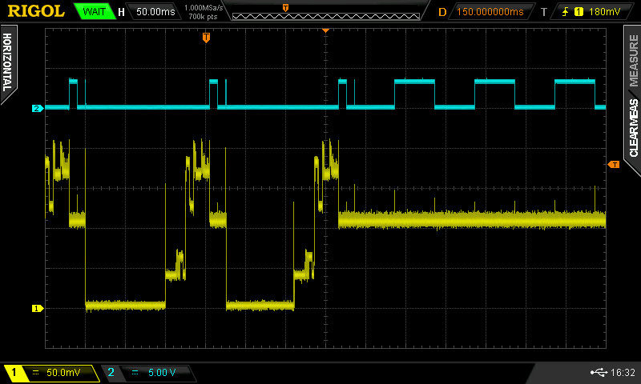
รูป: ตัวอย่างคลื่นสัญญาณที่วัดได้ด้วสโคป แสดงให้เห็นช่วงที่ถูกปลุกด้วย RTC Timer และถัดมาเป็นการปลุกด้วย RTC GPIO และไม่เข้าสู่โหมด Deep-Sleep อีกต่อไป (ใช้กระแสประมาณ 18.3mA)
▷ ตัวอย่างโค้ดที่ 5: Modem-Sleep & Wi-Fi STA#
ตัวอย่างนี้สาธิตการขั้นตอนต่อไปนี้
- ทำให้ ESP32-C3 ทำงานในโหมด Wi-Fi STA
- เชื่อมต่อกับ Wi-Fi AP / Router ซึ่งต้องตั้งค่า
WIFI_SSIDและWIFI_PASSWDในไฟล์"secrets.h" - เมื่อเชื่อมต่อ Wi-Fi ได้แล้ว จะตรวจสอบการเชื่อมต่อกับ Host ในอินเทอร์เน็ต
เช่น
8.8.8.8ด้วยวิธีการ Ping (ใช้ Arduino Library ที่มีชื่อว่าESPpingสำหรับการทำงานในส่วนนี้) - เมื่อได้ทำขั้นตอน Ping ในครั้งแรกแล้วภายในฟังก์ชัน
setup()จะทำคำสั่งWiFi.setSleep( WIFI_PS_MAX_MODEM )เพื่อทำให้ ESP32-C3 สามารถเข้าสู่โหมด Modem-Sleep ได้ หาก CPU อยู่ในสภาวะ Idle ก่อนทำขั้นตอน Ping ในช่วงเวลาถัดไป (เช่น ทุก ๆ 5 วินาที โดยประมาณ)
#include <Arduino.h>
#include <WiFi.h>
#include <ESPping.h> // Use the ESPping library (v1.0.5)
#include "secrets.h" // Define WIFI_SSID and WIFI_PASSWD
static IPAddress PING_IP(8, 8, 8, 8); // The remote ip to ping
#define PING_INTERVAL_MSEC (5000)
#define PULSE_GPIO 10 // GPIO-10
void connect_wifi() {
WiFi.setTxPower( WIFI_POWER_21dBm );
WiFi.mode( WIFI_STA );
WiFi.begin( WIFI_SSID, WIFI_PASSWD );
WiFi.setSleep(false);
WiFi.setAutoReconnect(true);
Serial.println("Connecting to WiFi...");
while (WiFi.status() != WL_CONNECTED) {
delay(200);
Serial.print(".");
}
Serial.println("\nConnected!");
Serial.print("IP address: ");
Serial.println(WiFi.localIP());
}
bool ping( int count=3 ) {
bool success = Ping.ping(PING_IP, count );
if (success) {
float avg_time_ms = Ping.averageTime();
Serial.printf("Ping: %.1f msec\n", avg_time_ms );
digitalWrite(PULSE_GPIO, 1);
delay( (int)(avg_time_ms) );
digitalWrite(PULSE_GPIO, 0);
}
return success;
}
void setup() {
// Set the pulse output GPIO as output
pinMode(PULSE_GPIO, OUTPUT);
digitalWrite(PULSE_GPIO, 0);
Serial.begin(115200);
delay(100);
connect_wifi();
if (!ping()) {
String ip = PING_IP.toString();
Serial.printf("Ping failed! %s\n", ip.c_str() );
}
// Enter Modem-sleep mode / WIFI_PS_MAX_MODEM
WiFi.setSleep( WIFI_PS_MAX_MODEM );
}
void loop() {
static unsigned long last_ping_ts = 0;
uint32_t now = millis();
if (now - last_ping_ts > PING_INTERVAL_MSEC) {
last_ping_ts = now;
ping();
}
}
ถัดไปเป็นตัวอย่างคลื่นสัญญาณซึ่งวัดด้วยสโคป 2 ช่อง มีดังนี้ ช่อง CH1 คือ แรงดันเอาต์พุตจากโมดูล MAX4080S และ CH2 คือ สัญญาณพัลส์จากขา GPIO ของ ESP32-C3 สัญญาณพัลส์ช่วงที่เป็น HIGH แสดงว่า การทำขั้นตอน Ping ในแต่ละครั้ง สำเร็จแล้ว
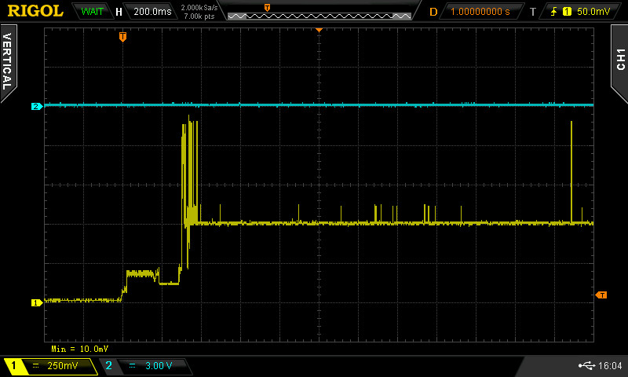
รูป: ตัวอย่างคลื่นสัญญาณช่วงแรกหลังจากรีเซต (Power Reset) การทำงานของ ESP32-C3 เพื่อเริ่มต้นการทำงาน
ช่วงแรกของการเริ่มต้นทำงานหลังจาก Power Reset และจะเห็นได้ว่า (ในโค้ดตัวอย่าง มีเปิดใช้งาน WiFi ด้วย และวงจร RF ถือว่าเป็นส่วนที่ใช้กระแสมากที่สุดของชิป) จะเห็นได้ว่า มีบางช่วงแรงดันขึ้นถึงระดับประมาณ 1150mV หรือคิดเป็นกระแส 191.67mA
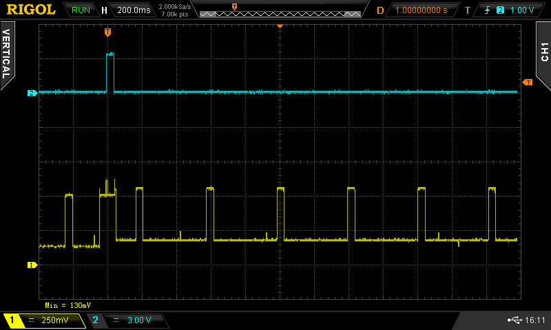
รูป: ตัวอย่างคลื่นสัญญาณ เมื่อชิป ESP32-C3 มีการทำงานในโหมด Modem-Sleep
จากรูปคลื่นสัญญาณ เมื่อมีการเข้าสู่โหมด Modem-Sleep จะเห็นได้ว่า บางช่วงเวลา วัดแรงดันได้ประมาณ 200mV ~ 520mV หรือ คิดเป็นกระแสประมาณ 33.3mA ~ 86.7mA ช่วงที่ใช้กระแสสูงนั้นเกิดขึ้นจากการทำงานของ Wi-Fi STA ที่ต้องเชื่อมต่อกับ WiFi AP / Router เป็นระยะ ๆ

รูป: ตัวอย่างคลื่นสัญญาณ เมื่อชิป ESP32-C3 ไม่มีการทำงานในโหมด Modem-Sleep
จากรูปคลื่นสัญญาณ หากไม่มีการเข้าสู่โหมด Modem-Sleep (ไม่ได้เปิดใช้งานโหมดนี้) และมีการทำงานในโหมด WiFI-STA ด้วย จะวัดแรงดันได้ประมาณ 500mV ~ 520mV หรือ คิดเป็นกระแสประมาณ 83.3mA ~ 86.7mA
ดังนั้นจึงสรุปได้ว่า การเปิดใช้งานโหมด Modem-Sleep ชิป ESP32-C3 ก็ช่วยลดการใช้กระแสได้เมื่อเปรียบเทียบกับการทำงาน ในโหมด CPU Active หรือไม่ได้เปิดใช้งานโหมด Modem-Sleep
▷ กล่าวสรุป#
บทความนี้มีตัวอย่างโค้ดเพื่อสาธิตการทำให้ชิป ESP32-C3 เข้าสู่โหมดประหยัดพลังงาน พร้อมกับการวัดกระแสของวงจรโดยใช้โมดูล Current-Shunt Monitor – MAX4080S และตรวจสอบเอาต์พุตโดยใช้สโคปแบบดิจิทัล โค้ดตัวอย่างและการทดลองวัดสัญญาณ แสดงให้เห็นความแตกต่างของโหมดการทำงานต่าง ๆ ได้อย่างชัดเจน
This work is licensed under a Creative Commons Attribution-ShareAlike 4.0 International License.
Created: 2025-05-17 | Last Updated: 2025-05-17